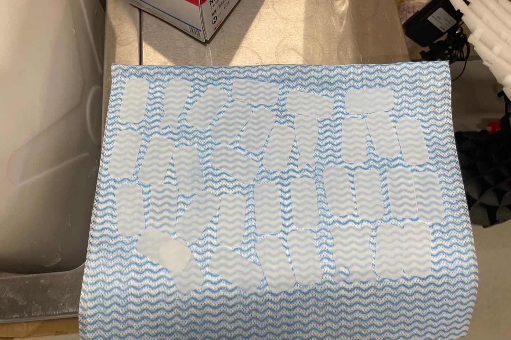

すしみくじの紹介
寿司みくじのきっかけは、かわせみが学園祭に出すおみくじとプラ寿司の意見の一致です。
神大に来た体験を感じて、思い出として残せる体制を考えました。
おみくじにみなとみらい要素を入れることで視覚的にも楽しめて
かつギャンブル的な人間の好奇心をくすぐるエンタメにできたと思います。
制作～当日
初めの週はお寿司をなんのネタで出すか数量や種類を話し合って、アクリルのカットや研磨をしました。
今回はSEAdsでおなじみになってたバレル研磨機を活用していきました。
バレル研磨機は、波の原理でシーグラスのような質感に研磨できる器械です。
研磨したものとしてないものだと染色のノリ具合も変わってきます。

レーンづくり
下の写真は初期に考えていたお寿司のレーンです。
fusionで設計して竹串とストローのローラーをはめ込めるように考えました。
しかし、回転寿司らしさが足りないのと手間がかかりすぎるためやめました。
寿司メンバーで回転ずしに行き、そこで観察し着想を得たものをMDFで試作
さらに世界観を広げるため、お皿のデザインをしました。（以下参照）
神奈川大学を感じてもらえるデザインを意識してデザインしたため、
青基調の縁の真ん中にKUの文字を入れています。
お皿とレーンの完成図はこんな感じです
そして３日前まで、おみくじの文章２４通りを考える怒涛の日々を過ごし、
前日の深夜から当日の朝まで印刷してなんとか当日に出すことができました。

感想
当日はいつもラボを利用してくれる人から友達・先生そして訪れてくれた人まで幅広く
おみくじを引いて楽しんだり、キーホルダーを購入して行ってくれたりしました。
初めはバックにこれだけお寿司が大量にあったのですが
ありがたいことに完売するネタも沢山でした。
初めはモーターで自動回転を考えていましたが、時間が足りずに手回しにしました。
今は頑張ったと自分で思えるのですが、やっぱりモーターも使いたい
ということで、お寿司みくじはYOXOフェスにも出す予定なのでお楽しみに!